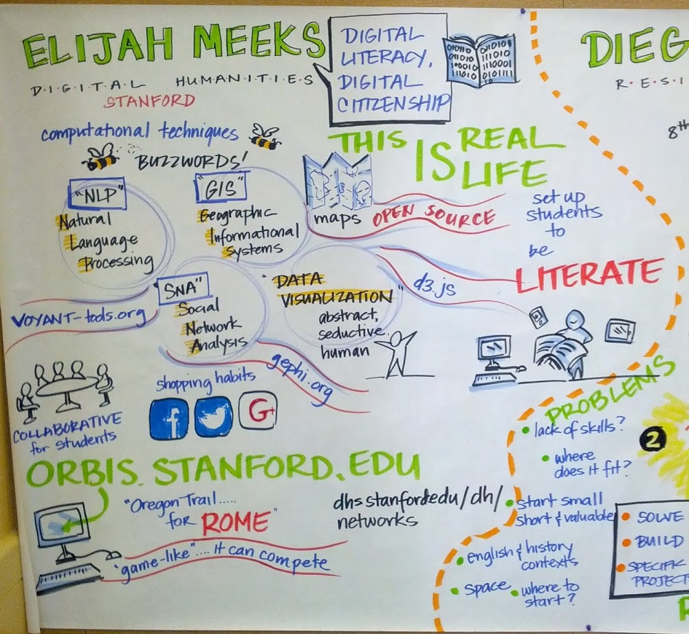
Visual notes of my talk about digital humanities in high school education
On Friday, I gave a talk for a Bay Area Teacher Development Collaborative workshop entitled “Technology for Teaching and Learning:What’s Worthwhile? What’s the Next Chapter?” I was asked to speak, broadly, on the role of digital humanities in middle school and high school education, and put together this slide deck, which I thought I’d explain a little more fully here.
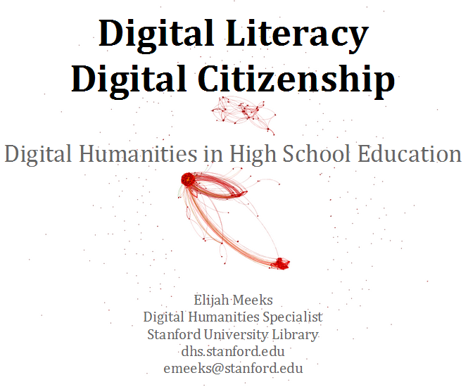
Usually, I don’t explain the title page. You already know the website address, and likely my email address, and probably my job title, but there’s a little piece of information that I’ve felt the need to emphasize more and more as I go out into the world for conferences and talks: I work for the library. I never imagined how much of a difference this would make in different venues. It’s an #alt-ac position, and so you receive the usual discourtesies if someone thinks that you’re pretending to be Stanford faculty. I’ve found it best to clearly mark and emphasize that. This wasn’t the case for the BATDC conference, and maybe that’s why I’m comfortable making this digression. The abstract network in the background is TVTropes, of course.
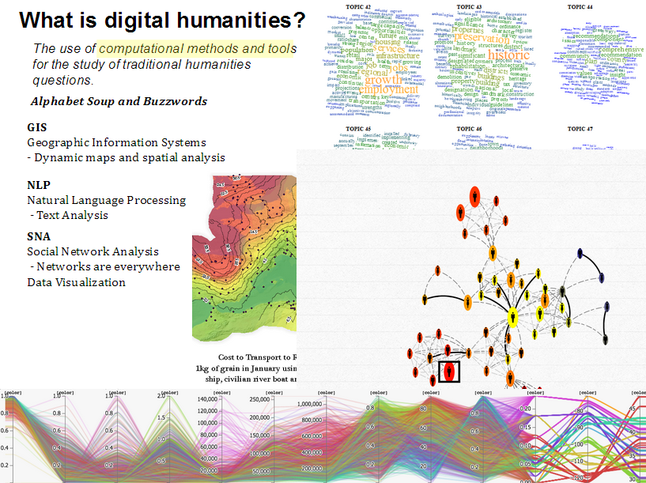
In any talk about digital humanities, even those held at conferences that have “digital” and/or “humanities” in the name, it helps to suggest another definition of “digital humanities”. Here’s a rather practical one: It’s the application and integration of buzzwords and acronyms into humanistic inquiry. I’ve thought of GIS/NLP/SNA/DataViz as the 3+1 pillars of digital humanities for a while, but I think more than those particular methods, digital humanities is the demystification of computational methods and their application in new and untraditional ways. So, it helps to mock them. It may be that a better definition of digital humanities: Careful application of computational methods to humanistic inquiry paired with careful application of skepticism toward computational methods for humanistic inquiry.
The examples for each are an isophoretric map of the Roman World, topic clouds, a network visualization of several generations of Darwins, and a parallel coordinates visualization of neighborhoods. These latter two examples are from projects which we hope to release in the coming weeks.
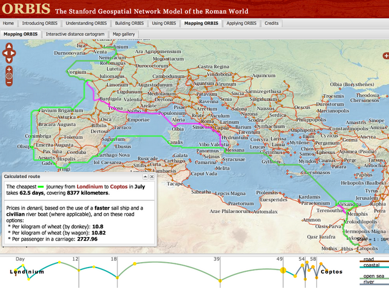
GISThere are so many good examples of GIS used for digital humanities research. This might be bias on my part, since spatial analysis was my first experience with this kind of work, and so I’m more aware of projects like ORBIS, Vision of Britain, and Civil War Washington, all of which provide ready-made resources for middle-school and high school teachers that want to bring geospatial information visualization into their classes. Because we have such a long and rich history of representing abstract concepts and data on maps, it makes a good gateway into more exotic data analysis and visualization methods. So, while these sites teach us about space and history, they also provide object examples of data visualization that, because of our familiarity and literacy with maps, doesn’t seem so arcane as network and text and other information visualization.
Each of the slides for GIS, NLP, SNA, and DataViz is meant to not only give resources for course material, but also provide avenues for teachers that want to get started with creating and developing more material using these methods. To that end, Neatline, Google Fusion Tables, and Quantum GIS are all freely available and provide the capacity for teachers to build their own dynamic and interactive geospatial projects.
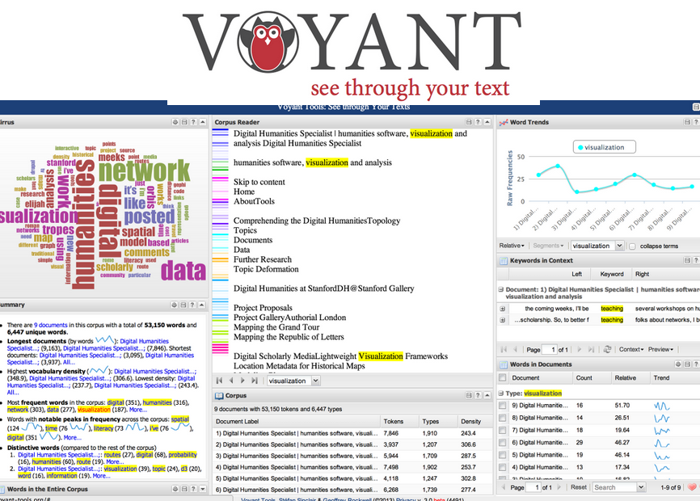
NLPNatural Language Processing is a harder thing to demystify than GIS. Maps and directions are a large and highly visible part of our life, but text analysis tends to be hidden away. But tools like Voyant provide teachers with the capacity to apply a wide variety of NLP processes to whatever text they would like to examine, whether it’s assigned reading or student essays. Importantly, the accessibility and user-friendliness of Voyant means that teachers (and students) can playfully engage with NLP and learn the methods through using the tools. Somehow I forgot to mention Wordle during the talk, but one of the teachers pointed it out during Q&A.
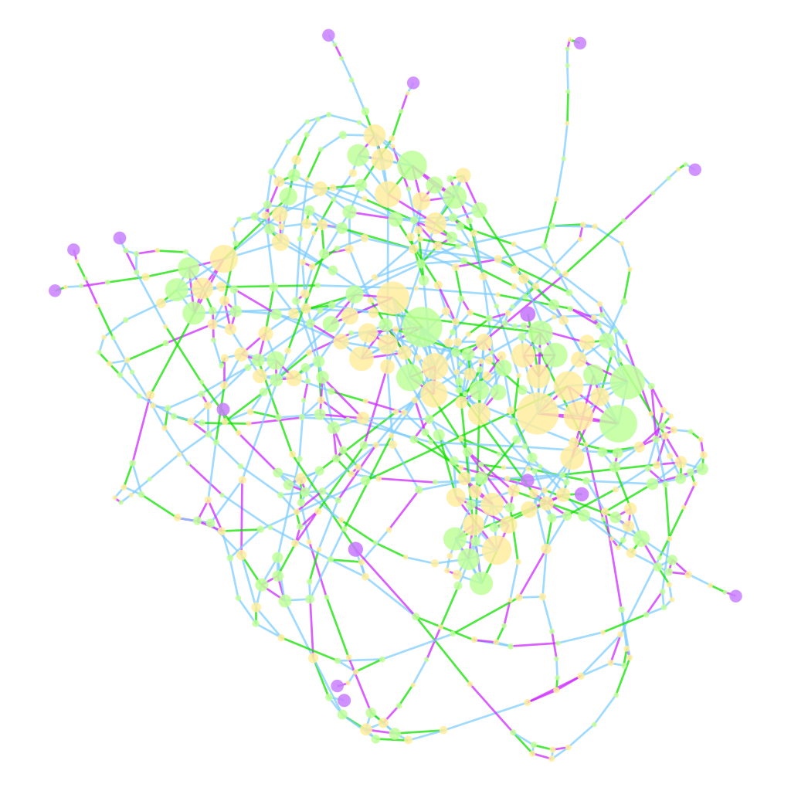
SNAWhile network analysis is not only social network analysis, it’s what people know, and so part of explaining networks is starting with social networks and then introducing transportation networks, genealogies, administrative networks, and so on. Like NLP, it is difficult to point to straightforward examples that are easy to integrate into courses, but for those that want to get started, I pointed them to my Interactive Introduction to Network Analysis, as well as my Network Analysis toolkit of choice, Gephi.
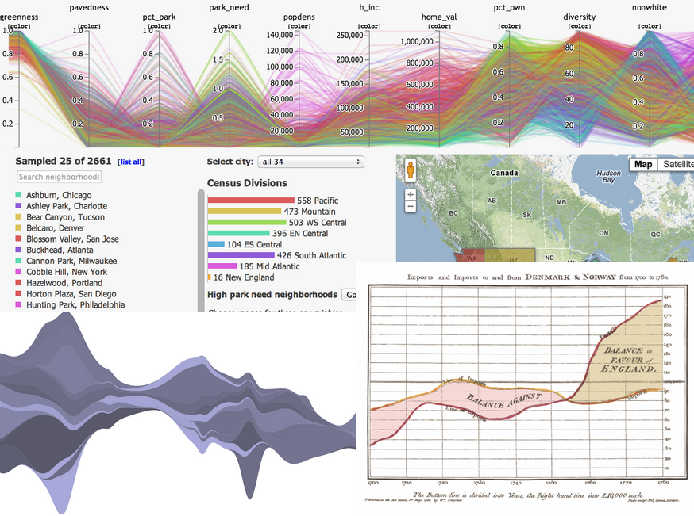
Data / Information Visualization
Data visualization as a fourth category is interesting from an ontological perspective, since it overlaps and conflicts in scope with the previous three. But I’ve noticed that it occupies a distinct space in the mental map of the digital humanities among practitioners, and provides a very accessible entry into the various, more intimidating methods above. My only link is to D3.js, because it provides not only a great library with which to build data viz but an excellent gallery of examples of data visualization. There’s so much dataviz on the Internet, that providing examples seems pointless.
So, that’s what and how, but why?
The remaining slides in the deck deal not with what digital humanities is/are/was, nor how to do it, or find it, but why it’s important. The broad definition of digital humanities makes it more difficult to make this case, and so that’s why I settled on the constrained, practical definition I started with. Practically speaking, integration of these methods and techniques makes sense for the following reasons:
Reason #1: Digital humanities is fun.
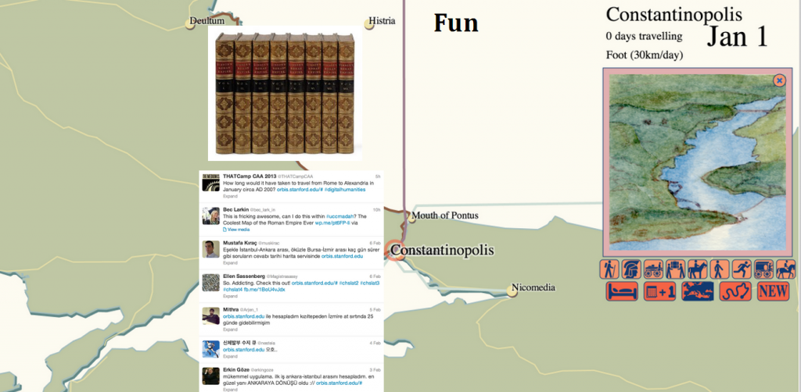
I touched on this a while back in regard to the popular appeal of ORBIS. By bringing innovative, interactive, and highly visual methods into the exploration of humanities subjects, you engage students in a way that just text does not. This is the basic principle behind gamification, except that the digital humanities isn’t trying to dress up an experience with the appearance of interactivity, but rather is predicated by it. Using Voyant is “fun”. You “play” with Gephi. People have tweeted that ORBIS is “awesome”.
Reason #2: Digital humanities is inherently collaborative.
I won’t repost the slide for this one, which is simply three lists of contributors to various DH projects. Collaboration is important from both a professional perspective and a social perspective. The world that your students are going to go out into is not one where they will work alone at one station, and punch a time clock and go home, but one where they are constantly in touch with everyone they are working with. More importantly, their world outside their work is the product of such collaboration. As I said in my talk, Steve Jobs didn’t go into his workshop and carve out an iPhone by himself, and so if we want young people to better understand and appreciate the way their world actually operates, we need to teach them about collaboration and to collaborate in their schoolwork. And because digital humanities is more self-conscious than the more established disciplines where this kind of collaboration is commonplace, it leads to more purposeful engagement with the subject.
Reason #3: Digital humanities overlaps with STEM
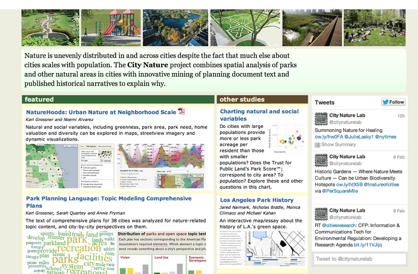
In trying to understand the role of natural spaces in urban environments, we’ve had to integrate remote sensing, topic modeling, and demography. The above screenshot comes from a project to be released soon, which demonstrates how these disparate factors contribute to our understanding of “city nature”. As digital humanities grows more expansive in its use of computational methods, the research and products that result share more and more in common with science, technology, engineering, and math.This is probably the most controversial point to make since, as I’ve said elsewhere, the overlap with STEM can mean that digital humanities research stops being humanities scholarship and becomes wholly information science or social science or computer science. But to understand the methods outlined above you need an understanding of projections, probability, statistical aggregation, and other computational and quantitative skills typically not associated with understanding Hamlet or Imperial Rome. I think the important thing to emphasize here is literacy versus fluency versus mastery. Digital humanities requires information literacy in a variety of now commonplace representations of data. Like everything else, it requires more as you do more, but it is, at least in my mind, still distinct from these other disciplines in that it seeks not to drive the development of those methods but rather to apply developed methods in those fields in novel and unexpected ways.
Reason #4: Digital humanities takes advantage of the growing accessibility of computational methods
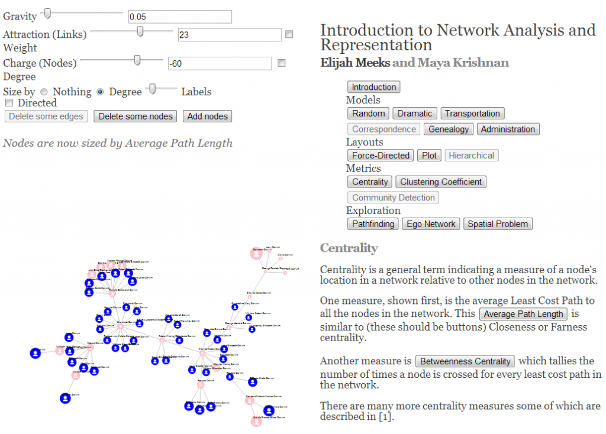
Please run this in Chrome or Safari
Paired with the last point is that it takes much less to perform spatial analysis, text analysis, network analysis, or data visualization than it did ten or twenty years ago. Much less money, since there are often open source or otherwise freely available tools that perform all of these; much less infrastructure, because these tools run on the web or on your laptop and do not require servers; much less training, because methods and techniques have matured and UI/UX principles are increasingly better integrated into the software tools; and much less struggle in general, especially struggle to get data, since we’re so awash in data. You do not need to be a network scientist to understand network analysis, nor a geographer to understand GIS.
Reason #5: Information Literacy is Powerful
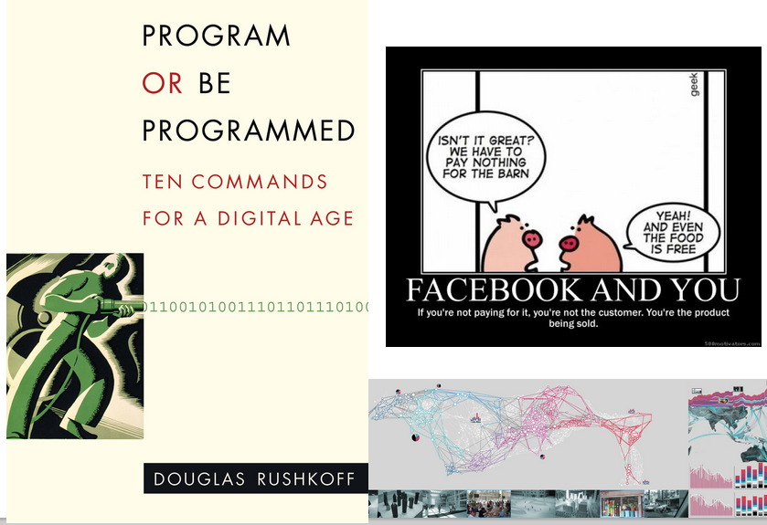
Understanding and succeeding in a world mediated by the methods outlined here can only happen when you are aware of what those methods are. With specialization, we assume it’s okay that only students who focus on learning about networks know how networks operate, even though everyone in a modern society participates within explicit network structures. Digital humanities exposes these structures more democratically, and explicitly provides non-experts in the specific domains with the literacy necessary to successfully interact with a world where those domains affect their everyday life. Digital humanities, along with providing a more sophisticated understanding of humanities phenomena, provides a more sophisticated understanding of a modern world that runs on the very same tools and techniques outlined above.Reason #6: Information Literacy is Meaningful
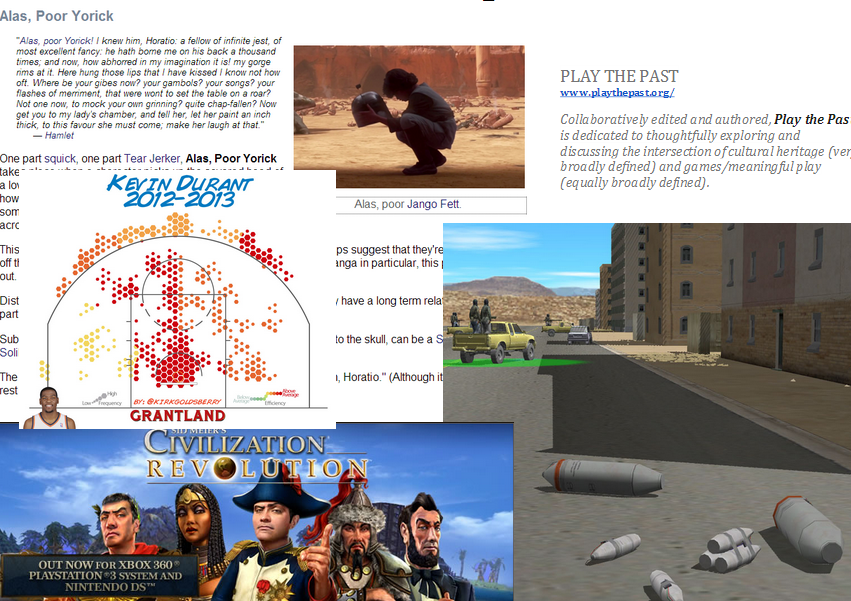
I have a basic bias toward digital humanities for high school students, and it’s because I’m convinced that the humanistic aspect of computational methods is not explored in goal-oriented, practical courses on using these tools in the sciences. When a student learns how to use a spatial or text or network analysis technique in a computer science course, they don’t dwell upon the ethical and social ramifications of its use. By bringing the digital into the humanities, we provide a space to question the effect of these pervasive techniques and tools on culture and society. Digital humanities, as those of us who have taken part in it are aware, is extremely self-conscious and self-critical, it lingers on definitions and problems of its scope and place, and it especially turns a jaundiced eye to technological optimism of all sorts, even as it attempts to integrate new technologies into the asking of very old questions. At the high school level, it provides for a more literate, skeptical student, which would prove beneficial in every aspect of society.And it would produce some really useful material for digital humanities undergraduate programs.